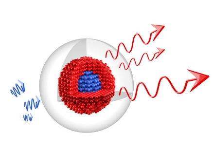

Quantum Dots
What about this?

Quantum dots are crystalline clumps of a few hundred atoms, coated with an insulating outer shell of a different material [1].
When a photon of visible light hits such a minute particle, a quantum-physics reflect confines all the photon’s energy to the crystal
core before being emitted as an extraordinary bright fluorescence. The QDs absorb light at a wide range of wavelengths, but emit almost
monochromatic light of a wavelength that depends on the size of the crystals [2]. The visualization properties of quantum dots (fluorescence wavelength)
are strongly size dependent. The optical properties of quantum dots depend upon their structure as they are composed of an outer shell and a metallic core.
Quantum dot core is usually made up of cadmium selenide, cadmium sulfide, or cadmium telluride. The outer shell is fabricated on the core
with high band gap energy in order to provide electrical insulation with preservation of fluorescence properties of quantum dots. The fine-tuned core
and shells with different sizes and compositions with visualization properties of specific wavelength provide a large number of biomarkers [3].
Quantum dots are conjugated with different ligands in order to obtain specific binding to biological receptors. Quantum dots offer significant
advantages over the conventional dyes such as narrow bandwidth emission, higher photostability, and extended absorption spectrum for
the single excitation source. Moreover, the challenge of hydrophobicity in quantum dots has been overcome by making them water soluble.
An example of the aqueous quantum dots with long retention time in biological fluids is the development of highly fluorescent
metal sulfide (MS) quantum dots fabricated with thiol-containing charged groups [4].
img src="images/dos.jpg">
FACT
If we illuminate a quantum dot with UV light, an electron in the QD can be excited and it will change to a state of higher energy!
The excited electron can drop into the valence band relasing its energy by the emission of light. The color of that light depends on the energy difference between the conductance band and the valence band.
FACT
If we illuminate a quantum dot with UV light, an electron in the QD can be excited and it will change to a state of higher energy!
The excited electron can drop into the valence band relasing its energy by the emission of light. The color of that light depends on the energy difference between the conductance band and the valence band.
FACT
If we illuminate a quantum dot with UV light, an electron in the QD can be excited and it will change to a state of higher energy!
The excited electron can drop into the valence band relasing its energy by the emission of light. The color of that light depends on the energy difference between the conductance band and the valence band.
FACT
If we illuminate a quantum dot with UV light, an electron in the QD can be excited and it will change to a state of higher energy!
The excited electron can drop into the valence band relasing its energy by the emission of light. The color of that light depends on the energy difference between the conductance band and the valence band.